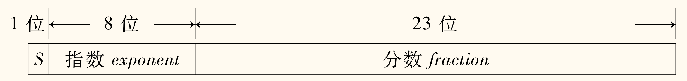

比特（bit）是计算机中最小的存储单位，只能存储 0 或 1。比特是「二进制位」（binary digit）的缩写。
8 个比特组成一个字节（byte），一个字节能表示 256 种不同的状态。
整数数据类型
无符号整数
像十进制一样，没什么好说的。比如 00011110(2)=30(10)，因为
0×27+0×26+0×25+1×24+1×23+1×22+1×21+0×20=30
使用 n 个比特可以表示 2n 个不同的状态，所以 n 个比特可以表示 0 到 2n−1 的整数，一个字节可以表示 0 到 255 的整数。
有符号整数
最符合直觉的，自然是拿出一位（比如最高位）来表示符号，0 表示正数，1 表示负数，这就是原码。例如 1101(2)=−5(10)，因为
(−1)1(1×23+1×22+0×21+1×20)=−5
但是这样有一个问题，就是 0 有两种表示方法，0000(2) 和 1000(2)，即 +0 与 −0，相当于浪费了一个状态。
还有一种方法，既然正数负数互为相反数，取「反」意，将正数按位取反，就得到了反码。例如 1101(2)=−2(10)，因为最高位是 1，所以是负数，然后取反得到 0010(2)，然后加 1 得到 0010(2)，即 2(10)，再加个负号就是 −2(10)。
不过还是一样有 0000(2) 与 1111(2) 的 +0 与 −0 问题。
而且，这样的表示方法，加法和减法的运算都不方便。下面分别是按十进制进位法计算原码和反码的加法：
++=010010111111(4)(−3)(−7)
++=010011000000(4)(−3)(0)
不可以按正常思路那样，一位一位加，然后进位，而是需要判断符号等。
补码解决上面的问题。
对于自然数，补码与原码相同。
对于负数，为了简化加法，我们想要实现 A 与 −A 的二进制表示相加（指符合常识的，也就是上面竖式计算的方式）等于 0，即 A+(−A)=0。
当然加成 0000(2) 显然是不可能的，除非两个整数都是 0，但是可以像上面反码那样，进一位成 10000(2)，忽略最高进位，于是变回 0000(2)。
那么对于 n 位，A 的补码直接解释过来（即视为无符号）就应该是 2n−A。
考虑反码，可以注意到原码和反码直接解释（同上）的和，就是所有位全为 1，也就是 2n−1，也就是说，A 的反码直接解释是 2n−A−1。
也就是说，补码是反码加 1。
使用补码，0 的表示方法就唯一，可以多一种状态以表示 −2n−1，而且方便进行加法运算，比如说上面的例子
++=010011010001(4)(−3)(1)
进制转换
二进制转十进制
自然数（最高位位 0）转换非常简单。有意思的是，对于负数（最高位为 1），也可以通过取反加一得到十进制表示的数值的绝对值的原码。原理如下
(2n−(2n−A)−1)+1=A
十进制转二进制
只需要了解正整数的转换，因为负数根据上面说的，只需要了解其绝对值的转换。
具体方法就是，不断除以 2，然后取余数，直到商为 0，然后把余数倒过来就是二进制表示。即「除 2 取余」法。
例如 123，有
123613015731=61×2+=30×2+=15×2+=7×2+=3×2+=1×2+=0×2+1101111
从而得到 123(10)=01111011(2)。
二进制与八进制/十六进制互转
二进制转八进制，每三位二进制数对应一位八进制数，即 000→0,001→1,⋯,111→7。
二进制转十六进制，每四位二进制数对应一位十六进制数，即 0000→0,0001→1,⋯,1111→F。
反过来一样，每一位八进制数对应三位二进制数，每一位十六进制数对应四位二进制数。
上面说的「每」，是从低位开始的。
小数的二进制表示
定点数十进制转二进制方法是「乘 2 取整」，从上到下整数部分为从高到低小数位。例如
0.6875×2=0.375×2=0.75×2=0.5×2=1.0.1.1.3757550
那么 0.6875=0.1011(2)。
算术运算
运算时，用 0 扩展正数的左端，用 1 扩展负数的左端，这个过程称为符号扩展。如 −4(10)=1100(2)，应当扩展为 111111111111121100（十六位）。
溢出只需要检查两个正数（负数）相加得到负数（正数）的情况，即可判断是否溢出。
逻辑运算
- 与 AND：A⋅B
- 或 OR：A+B
- 非 NOT：Aˉ
- 异或 XOR：A⊕B
ASCII 码
一个字符占一个字节，即 8 位。
几个特征：
- 0-9 的 ASCII 码是 30(16)-39(16)
- A-Z 的 ASCII 码是 41(16)-5A(16)
- a-z 的 ASCII 码是 61(16)-7A(16)
也就是说，大小写转换只需要在 ASCII 码上加减 20(16)。
浮点数
应该是这章类型表示中最复杂的一部分了。使用的是 IEEE 754 标准，这里使用 32 位的单精度浮点数来举例。
单精度浮点数的 32 位分配如下：
- 符号位 s：1 位
- 指数位 E：8 位
- 分数位 f：23 位

一般的书、教程都会直接丢一个公式上来，比如下面这个
n=(−1)s×2E−e×1.f
看起来比较吓人，然后开始依次讲解每个部分的意义。我觉得这样……很好。
符号位
这没啥好说的，0 表示正数，1 表示负数。
分数位
常用的科学计数法表示法，十进制中是 a.b1b2⋯bn×10p，其中 a∈N∗,bi∈N，也就是说 a 不为 0。
类似的，有二进制的「科学计数法」，即 a.b1b2⋯bn×2p，这里 a,b∈{0,1}。同样的，a 不为 0，可以简化为 1.b1b2⋯bn×2p(b∈{0,1})。这样最高位为 1，可以省去了 1 位，同样位数可以多表示一位。
这也就是上面公式的 1.f 部分。
指数位
这部分是 2p，在上面表示为 2E−e，其中 e 为偏置常数，在单精度浮点数中为 127。
指数 8 位当作无符号整数，可以表示 0-255，但是为了表示负指数，需要减去一个常数 e，因此实际上可以表示 −127-128。
至于为什么取 e=127，这个我搜了一下没找到原因。这里是我参考网上的信息，结合自己的猜测：基本上为了对称，偏置常数取中间两个数比较好，也就是 127 和 128。而如果采用 128，那么仅仅是能表示一个更小的数，但是表示范围却大大减少了，而大部分情况下可能大的范围比小的范围价值更高（尤其在已经有一定小范围的情况下），在权衡之下，最终选择了 127。
但是其实指数实际表示范围并不是 −127-128，而是 −126-127，因为 −127 和 128 都进行了特殊化处理：
- E=0：表示非规格化数，此时数值为 (−1)s×2−126×(0.f)（分数位开头变为 0），可以用来表示很小的数。
- 特别的，f=0 时，表示的是 0（当然，这样的表示法有 +0.0 和 −0.0 之分）。
- E=255：表示特殊数。
- f=0：表示无穷大，正负由符号位决定。
- f=0：表示非数（NaN, Not a Number），用来表示不确定的结果，如 0.0/0.0。
对于双精度浮点数（64 位），符号位为 1 位，指数位为 11 位，分数位为 52 位。（指数只需稍微增加一点，范围就会迅速增大，因此只需要稍微增加一点就可以满足大部分需求，而此时提高精度更有价值）